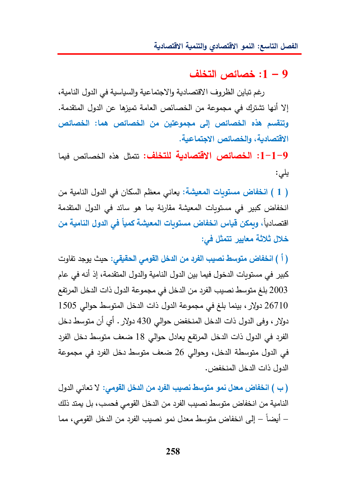

:euitill:1-—9cAzalallJoallYlagGulae)geyeY|Gailadl)Cacl)otaodeGhat:CeSgall(68(ley(1)ailLyAbbieGhyieeC4oodteasJGCus(pagl)Gye(|)ale(hailAestiallpallygallGusLad(68pusONSSpalldepenegdyeyallreaal20031505ONS(28Al«26710JsohishcallsGISSpall«99ayill18UdallGISgall4yal(2hayillUdoire26ldgallgillAllLeangiagaiJameASShasUpgillGyoGyoLes(yogedI]—Lal—258